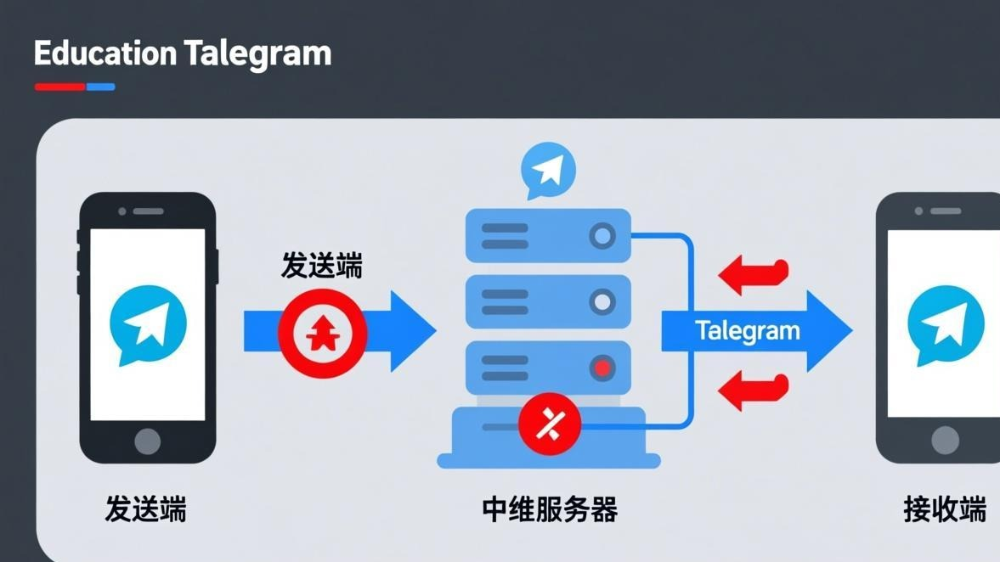
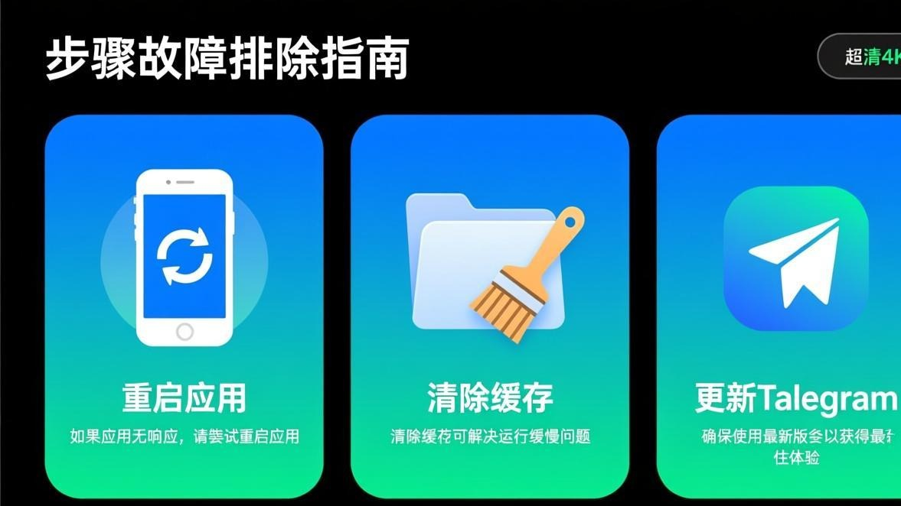

前天我在Telegram里翻一个群里以前的聊天记录，想找一张前几天别人发的图片，结果一点开，图片位置是个灰色的方块，上面还有个裂图的小图标。我以为是图片被删了，结果往上一看，同一个人发的别的图片也变成了灰色方块。
我当时第一反应是网络问题，切了WiFi、换了流量，等了半天还是那个灰色方块。后来我又试了别的聊天窗口，发现有些聊天里的图片能正常显示，有些就不行——而且好像是最近一段时间的图片容易出问题，更早之前的反而能显示。

折腾了半天，终于搞清楚了这个问题的几种可能原因，也找到了对应的解决方法。现在我把这些都写下来，你要是也遇到图片显示空白或者裂图的情况，对着试一下应该就能搞定。
先搞清楚你是哪种「空白」
在开始折腾之前，先看看你的图片「空白」是哪种情况，不同的情况原因不一样：
第一种：图片位置是个灰色的方块，上面有个裂开的小图标（就是浏览器里那种「图片无法加载」的图标）。这种情况通常是图片文件本身的问题——可能是上传的时候没传完，或者是图片文件损坏了。

第二种：图片位置是空白的，啥都没有，也不是灰色方块，就是一片空白，但你能看到图片的「轮廓」（就是那个图片占位的地方）。这种情况通常是缓存的问题，或者是网络加载中断了。
第三种：图片能显示一部分，但下面或者中间是空白的（比如上半部分能看，下半部分是灰的）。这种情况我遇到得比较少，可能是图片文件下载不完整导致的。
第四种：所有图片都显示成那种默认的「头像」图标（就是你没设置头像时显示的那个灰色圆形图标）。这种情况比较少见，通常是Telegram的媒体加载功能被关掉了。
我遇到的是第一种和第三种，下面的方法都是针对这些情况的。如果你的情况不太一样，也可以试试，反正也不麻烦。
方法一：最简单的——长按图片选「重新下载」
这个方法我愿称之为「最容易忽略但最有效」的方法。Telegram里的图片如果加载失败了，它会一直显示那个失败的状态，不会自动重新加载。但你如果长按那张图片，会弹出一个菜单，里面有个「重新下载」或者「重新加载」的选项，点一下它就会重新下载这张图片。
我那个灰色方块的问题，就是这么搞定的——长按图片，点「重新下载」，等了几秒图片就出来了。我当时都想骂自己了，这么简单的事我居然折腾了半小时。
步骤 1
在聊天窗口里找到那张显示空白或者裂图的图片
步骤 2
长按那张图片（Android）或者用力按（iOS）
步骤 3
在弹出的菜单里找到「重新下载」、「重新加载」或者「Download again」这个选项
步骤 4
点一下，等它重新下载完，看看图片能不能显示
步骤 5
如果还是不行，可以试试点「在消息中打开」（Open in message），有时候从消息详情里打开图片能正常显示
说个我发现的细节：
我发现有的时候，图片在聊天列表里显示裂图，但你点进去（就是点那个聊天窗口右上角的那个人名或者群名，选「媒体、链接和文档」），在媒体列表里却能正常显示。如果你遇到这种情况，可以从媒体列表里找到那张图片，然后转发给自己或者收藏，这样就不用重新下载了。
方法二：清除Telegram的缓存（老生常谈但真的有用）
如果重新下载不行，那很可能是缓存的问题。Telegram会把你看过的图片存到本地缓存里，如果缓存数据损坏了（比如下载到一半中断了），那这张图片就会一直显示裂图，因为Telegram会优先从缓存里读取，不会重新下载。
这种时候你就需要把缓存清掉，让Telegram重新从服务器下载图片。清缓存的方法我在Telegram图片一直转圈的解决方法里也写过，这里再简单说一下步骤。
步骤 1
打开Telegram，点右上角的菜单按钮（三条横线）
步骤 2
进入「设置」->「高级」->「存储与数据」
步骤 3
找到「清除全部缓存」，点一下
步骤 4
等它清完（通常会显示清掉了多少MB的缓存）
步骤 5
完全关闭Telegram（从后台也划掉），然后重新打开
步骤 6
找到那张裂图的图片，看看能不能正常加载
一个小技巧：
如果你不想清掉所有缓存（因为清完之后所有图片都要重新下载，比较费流量），你可以试试在「存储与数据」里找到「按聊天清除缓存」，然后只清除有问题的那个聊天的缓存。不过这个功能不是所有版本都有，如果你的Telegram没有这个选项，那就只能清全部缓存了。
方法三：检查一下是不是网络的问题
如果清完缓存还是不行，那可能是网络的问题。特别是如果你在国内用Telegram，网络环境比较复杂，有时候会导致图片下载到一半就中断了，结果就是裂图或者空白。
我有个朋友就遇到过这种情况——他的Telegram文字消息能正常收发，但图片经常显示裂图。后来发现是他用的那个网络工具不稳定，导致图片下载经常中断。换了个工作稳定的工具之后，裂图的问题就基本没再出现了。
如果你怀疑是网络的问题，可以试试这几个方法：
第一，切换网络。从WiFi换到移动数据，或者反过来。我遇到过 WiFi 明明能上网，但Telegram就是加载不出图片的情况，换成移动数据就好了。
第二，如果你用了网络工具，试试换一个节点。有些节点支持文字消息但不太稳定支持大流量下载（图片、视频这些），换一个节点可能会好。
第三，试试开一下「飞行模式」再关掉。这个是我同事教我的偏方，他说这样能让手机重新建立网络连接，有时候能解决一些莫名其妙的网络问题。我试了下，有时候确实有用，虽然不知道原理是啥。
方法四：看看是不是图片本身的问题（这种情况比较无奈）
有时候图片显示裂图，不是你这边的问题，而是图片本身就有问题。比如发图片的人在网络不好的时候发的，结果图片没传完就断了，那这张图片在Telegram的服务器上就是损坏的，你这边怎么重新下载都没用。
这种情况怎么判断？你可以试试让发图片的人重新发一次。如果重新发的一次能正常显示，那就是之前那张图片上传的时候出问题了。
还有一种情况，就是图片格式的问题。Telegram支持常见的图片格式（JPG、PNG、GIF、WEBP这些），但如果你收到的是一些比较冷门的格式（比如TIFF、RAW、或者某些HEIC的格式），Telegram可能就显示不了，会显示成裂图。
这种时候你可以试试在「媒体、链接和文档」里找到那张图片，然后下载到手机本地，用别的图片查看器打开看看能不能显示。如果别的查看器能显示，那就是Telegram不支持那个格式；如果别的查看器也显示不了，那就是图片文件本身损坏了。
方法五：iOS用户专属的几个坑
iOS用户如果遇到图片显示空白或者裂图，除了上面说的方法之外，还有几个iOS特有的坑：
第一个是「低数据模式」。iOS的这个功能会限制应用的后台数据使用，有时候会导致Telegram在后台没法定下载图片，结果就是你打开聊天窗口的时候图片显示裂图。你可以去「设置 -> 蜂窝网络 -> 蜂窝数据选项 -> 低数据模式」里看看是不是打开了，如果是，关掉试试。
第二个是iCloud的照片同步。如果你的iPhone开启了iCloud照片库，并且选了「优化iPhone存储空间」，那有些照片会被压缩存到iCloud上，本地只保留缩略图。有时候Telegram想读取相册里的图片做预览，结果读到的时缩略图，就会显示不正常。这个情况比较少见，但如果你iPhone经常提示存储空间不足，可以留意一下。
第三个是iOS的「屏幕使用时间」里的限制。有些家长控制会限制某些应用的网络访问，如果你手机上开了屏幕使用时间或者家长控制，可以检查一下是不是限制了Telegram的网络访问。
如果所有方法都不行，还有这几个「偏方」
我同事说他试过几个很离谱的方法，有时候能把裂图修好：
1. 把Telegram完全关掉，然后把手机重启一下，再打开Telegram。他说这样做能让Telegram重新初始化一些内部状态，有时候能解决裂图的问题。我试了下，确实有一次有用。
2. 退出Telegram账号，然后重新登录。这个方法比较麻烦，因为你要重新输入验证码什么的，但确实是最彻底的一个方法。如果前面的方法都不行，可以试试这个。
3. 如果是群里的图片裂图，试试让群里的人发一张新的图片，然后你再回去看看之前裂图的那张能不能显示。我同事说有时候是某张图片卡住了，导致后面的图片也加载不出来，新发一张图片可能会「解锁」这个状态。这个说法我没找到什么技术依据，但确实有人这么说，试试也不亏。
4. 还有一个很偏的方法——改一下手机的日期和时间，等个几秒再改回来。我也不知道这个原理是啥，但我在网上看到有人这么说，说是时区或者时间戳的问题导致图片加载失败。这个方法我没法保证有用，但你要是前面的方法都不行，可以试试看。
说说怎么避免这问题再出现
这次把我自己的裂图问题搞定之后，我总结了几个预防方法：
第一，尽量在网络稳定的时候用Telegram。如果你网络环境不太好，可以等网络稳定了再看图片，这样能减少下载中断的情况。
第二，定期清一下Telegram的缓存。缓存太多不仅占用存储空间，有时候还会导致各种奇怪的问题，包括裂图。我是每个月清一次，在「设置 -> 高级 -> 存储与数据」里就能清。
第三，如果你经常遇到裂图的问题，可以试试在Telegram的设置里把「自动下载媒体」关掉，然后手动点开图片再下载。虽然这样比较麻烦，但能确保每张图片都是完整下载的，不会出现下载到一半的情况。
第四，如果你用的是iOS，可以留意一下「低数据模式」是不是开着。这个功能虽然能省流量，但会导致Telegram的媒体加载不稳定，容易出现裂图。
更多关于图片无法显示的问题，可以看看图片无法显示分类里的其他文章，说不定能找到你的问题的解决方法。
常见问题
好了，关于Telegram图片显示空白或者裂图的问题，我能想到的所有解决方法都写在这里了。这个问题说大不大，说小也不小——不影响收发消息，但就是看着烦。希望你能用上面的方法把问题搞定，别像我一样折腾半天发现只是忘了点「重新下载」。
如果你试了所有方法还是不行，那可能是比较冷门的原因，你可以去Telegram图片修复教程首页看看有没有相关的内容，或者直接联系我们，我们会尽量帮你看看。说实话，这种问题每个人的情况可能不太一样，多试试总没坏处。
📱 立即下载 Telegram 最新版
更新到最新版本可修复大部分图片加载问题，官方正版安全无捆绑。